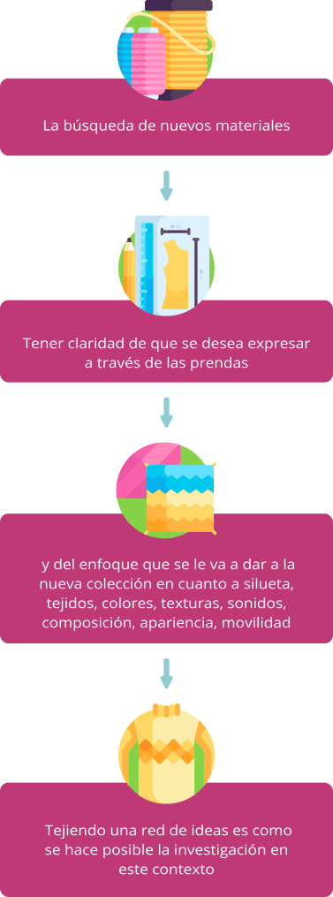
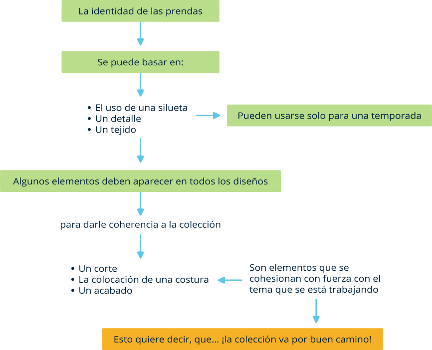
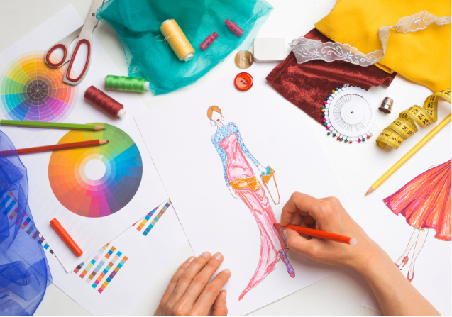
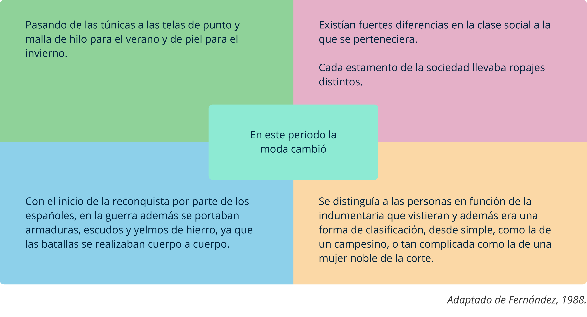

1. Introducción al mundo de la moda
La moda influye directamente en el comportamiento, actitud, gustos y preferencias de las personas y puede determinar las características diferenciales del individuo en la sociedad; de allí la importancia que el aprendiz se fundamente con las herramientas necesarias para investigar, conocer, participar y desarrollar propuestas utilizando los medios, desarrollando la capacidad de representar nuevas ideas, teniendo presente que “el cuerpo vestido es su principio y su fin”.
Este proceso necesita entenderse como un proyecto de construcción de conocimientos que le van sumando de una forma ascendente a su formación, hasta completar las herramientas técnicas y creativas necesarias para el desempeño laboral; proceso que debe ser divertido, apasionante, inspirador, transformador y sobre todo útil en su vida profesional y personal.
1.1 Introducción

Mis ideas proceden de mis sueños […]. Si tienes suerte y eres capaz de utilizar algo que has visto en tus sueños, el resultado será totalmente original. No es algo que ya exista en el mundo, sino que está en tu cabeza. Pienso que esto es extraordinario.

(Alexander McQueen, s.f., como se citó en Seivewright, Simon & Zelich, 2013)
La moda no es más que una forma de fealdad tan intolerable que nos vemos obligados a cambiarla cada seis meses.
Sorger, Udale & Zelich, 2007
Es insaciable y despiadada, sin embargo, la capacidad para crear prendas de vestir es también algo muy atractivo y satisfactorio.
Los diseñadores necesitan investigar para:
Comprender las técnicas de construcción de prendas.
Saber desarrollar una colección.
Saber y entender para quien diseñan.
Qué tipo de prenda van a desarrollar y para qué estación.
Acabar una colección es solo el principio; luego debe ser promocionada y comercializada.
Las personas creativas son indispensables para la industria de la moda y hacen equipo con los encargados de compras, agentes de venta, periodistas, fotógrafos, estilistas, ilustradores y demás actores involucrados en este maravilloso mundo de la moda.
1.2 ¿Está a la moda?
Es una pregunta que a diario se debería hacer toda persona que quiere formarse para trabajar en el mundo de la moda y entender su significado. Cuando los coetáneos o la industria estiman que los diseños están acordes con el espíritu del momento, significa que el proceso de diseño tiene grandes posibilidades de ser exitoso en el mercado.
El mundo está en un constante cambio, aparecen y desaparecen costumbres o estilos populares en boga en un determinado momento, especialmente con relación al vestir, en esencia esto significa un estilo puesto al día.
Para el desarrollo de colecciones, es importante tener presente:
Una conciencia del propio gusto y estilo.
Conocerse a sí mismo.
Mantenerse fiel a la propia visión del modo en que se quiere vestir a alguien.
“Siempre habrá a quien le guste y a quien no le guste”.
A través de la lectura del siguiente documento podrá reflexionar en torno a la pregunta ¿estás a la moda?
1.3 Conocer de moda
Es fundamental que las personas que intervienen en el proceso de desarrollo de una colección adquieran la habilidad para construir a partir de varias fuentes; lo principal es vivenciar lo que está pasando, leer el entorno, el tiempo, el espacio, la necesidad, el usuario, esto es lo que se llama “conocer de moda”. Reconocer el trabajo de otros es determinante para no estar reproduciendo ingenuamente lo que ya existe.
La tecnología permite que el acceso a la información sea más ágil y la búsqueda se pueda dar en diferentes niveles, ya sea macrotendencias, microtendencias, mindstyles, coolhunters, cultsearchers, trendsetters y celebrities, google trends y google insight, youtubers, influencers, early adopters, blogueros, páginas web, innovadores y visionarios, entre otras, son fuentes de información que dan las herramientas para ser propositivo, innovador y transformar a la hora de crear moda.
Los medios de comunicación masiva constituyen un buen punto de partida, sin embargo, son solo una fuente de información. Mientras más puntos de vista se tengan es mucho mejor, ya que todos forman parte del engranaje de la moda y van dirigidos a un sector o nicho del mercado. También es importante la influencia que tienen las diferentes culturas y los profesionales en diversos oficios como estilistas, periodistas, fotógrafos y personajes públicos inspiradores.
A través de la lectura del siguiente documento podrá entender un poco más de qué se trata conocer de moda.
1.4 Empezar a investigar de moda
La investigación para la moda es estar siempre al acecho de algo para utilizar o “robar”.
La búsqueda constante de elementos que permitan inventar todo con cada nueva temporada, utilizando siempre una nueva inspiración, alimentar la investigación con imágenes, inspira la mente creativa.
Todo depende de la forma como se decida y desarrolle el tema, de tal manera que permita extraer la información necesaria para la nueva colección; el hallazgo debe permitir:
Tejiendo una red de ideas es como se hace posible la investigación en este contexto.
El creativo es un detective a la caza escurridiza de información. Son fuentes de investigación:
Una buena biblioteca es un tesoro, entre más antigua mejor.
Escuelas y universidades.
Los mercados de viejo, tiendas de ropa usada, las ferias de antigüedades, prendas, libros, discos, objetos cotidianos que ya no están de moda.
La ropa histórica, étnica, o especializada.
Lo que se considera kitsch.
Museos (El Londinense Victoria and Albert Museum).
Las grandes empresas y marcas.
Los viajes, vacaciones.
Documentos, compras, postales, recortes de revistas y dibujos.
Todo debe estar a la mano y a la vista como información aplicable para conceptualizar y desarrollar los elementos que forman parte y caracterizan la colección. Revise el documento para profundizar en esta temática.
1.5 Concepto de moda
Es necesario escoger el tema o concepto con cuidado ya que debe ser una ayuda para el diseño y no un obstáculo.
(Sorger et al., 2007, p. 18
Es importante escoger un tema o concepto para desarrollar, que permita activar el proceso creativo teniendo claro que lo que se busca es encontrar las herramientas necesarias aplicadas a una colección, debe ser algo con lo que se pueda trabajar y vivir mientras dure la colección.
El concepto es una forma de estimular la mente y de abrir nuevas direcciones al proceso de desarrollo de la colección, el creativo debe ser honesto con el tema, que le interese, estimule e inspire; el tema puede ser conceptual o abstracto, pero siempre tener clara la búsqueda.
El resultado debe arrojar unas prendas novedosas, modernas, actuales, favorecedoras, de buen aspecto, que suscitan el entusiasmo para que el usuario apruebe y quiera usar la nueva colección.
Siempre debe estar presente la pregunta:
¿Se venderán mis creaciones?
1.6 Métodos para generar ideas
Existen métodos para generar ideas como número de personas, cada una puede organizar su proceso de acuerdo al nivel educativo que tenga, a la sociedad en la que se desarrolla y al medio en que se mueve; las herramientas son utilizadas también de forma particular y todas son válidas siempre y cuando se tengan claros los resultados de búsqueda, por lo tanto se pueden sugerir: fotocopias y muestras de tejidos (pared), Block de dibujos (imágenes, tejidos y adornos), Mood-board, Story Board o Panel temático y lluvia de ideas.
El creativo aprovecha para desarrollar nuevas creaciones, normalmente en un cuaderno o carpeta digital con dibujos y escritos, bien sea armados en forma de collage, yuxtaposición, lupas o en artículos con preguntas y respuestas, estas técnicas son esencialmente una destilación de la investigación, en cierta forma son la versión destinada a la presentación del cuaderno de investigación. Con la ayuda de ellas el diseñador comunica los temas, conceptos, colores, y tejidos que utilizará para el diseño de la colección de la temporada. Sirven para comunicar a otros diseñadores, jefes, empleados, estilistas, asesores de puntos de ventas, entre otros interesados, todo lo relacionado con la nueva colección.
“Nunca he visto ventaja en no ir más allá del modo en que la prudencia convencional decreta que debe cortarse una chaqueta. Hace tiempo que comprendí la importancia de ser curioso. No hay que asustarse o esconderse detrás de ideas preconcebidas. Hay que experimentar. Hay que hacerlo y resulta hermoso porque se descubre en ello una energía que, a su vez, alimenta. No existen las reglas” John Galliano, de Colin McDowell, Weidenfeld & Nicolson, s.f., como se cita en Sorger et al, 2007, p. 26.
1.7 Diseñar
La moda es algo muy importante. Potencia la vida y, como todo aquello que procura placer, vale la pena hacerlo bien.
(Vivienne Westwood, s.f., como se cita en Sorger et al., 2007, p. 12)
No hay nada que dé más miedo que una página en blanco. ¡No hay que asustarse!
Sorger et al., 2007, p. 8.
En el momento de comenzar el proceso de desarrollo creativo, es bien importante tener a la mano las herramientas necesarias, que permitan explorar todas las posibilidades que se puedan ocurrir para plasmar ideas en las prendas que formarán parte de la colección. En esta fase no se debe descartar nada, porque incluso más adelante esto puede servir para descubrir el potencial de una idea aplicada a un nuevo desarrollo.
El desarrollo creativo siempre debe tener presente el enfoque o la dirección hacia donde está proyectado el proceso, vestir el cuerpo es la esencia, sin olvidar los complementos que pasan a formar parte del engranaje como son:
Los detalles, las proporciones, las líneas, la silueta, los colores, el tejido y las texturas. El control que se hace de todos estos elementos, es fundamental al momento de desarrollar una colección.
¡Dios se encuentra en los detalles!
Torales, E. y Meyer, M. (s.f.). Elementos y principios del diseño: Diseño de Indumentaria Urbana I.
1.8 Cuerpos y siluetas
Es el momento del nacimiento en el que todos somos iguales, y es de ese instante, del que el humano, intenta huir.
Squicciarino,.1990
El hombre durante toda su existencia siempre se ha caracterizado a diferencia de otras especies, por las transformaciones aplicadas a su cuerpo, que se ven influenciadas por la geografía, la sociedad, la cultura, la política, la economía y en muchos casos por las jerarquías establecidas por el mismo hombre, el cual a partir de sus necesidades se vio obligado a buscar los medios de protección para su cuerpo, que luego se transformaron en artilugios cargados de estética, de simbolismos y diferenciación.
El cuerpo en cada individuo por naturaleza siempre dará como resultado una silueta diferente, que a su vez puede ser transformada por todo lo que allí se pueda portar.
En la silueta, se da la primera búsqueda del equilibrio de la estética en la transformación visual del cuerpo, se pretende proyectar un dinamismo en su composición, generar sensaciones determinadas por el uso de materiales, aplicación de volumen, estrechez, texturas, color y en general todo aquello que visualmente hace que las personas se vean diferentes. La adición de ornamentos y accesorios crea la transformación de lo básico, mostrando una distorsión deseada del cuerpo.
1.9 Proporciones y líneas
Las proporciones del cuerpo visualmente se refieren a como se divide la figura por medio de unas líneas básicas; dependiendo de cómo esté dispuesta la silueta, se estiliza, engrosa o cambia de aspecto.
Cuando se utilizan líneas horizontales, verticales, anguladas, curvas, inclinadas de manera independiente o combinada con otros elementos (textura, color, tamaño, forma), se generan ilusiones ópticas intencionales que aplicadas al vestuario hacen ver diferente el cuerpo.
La proporción del cuerpo se define visualmente por la relación de líneas básicas: largo, talle, cintura, pecho, cadera y cuello con las que se generan bloques que permiten la intervención para obtener el equilibrio en el desarrollo de la prenda, creando así focos de atención intencionales para lograr armonía en toda la figura. En una prenda el uso de las líneas se hace evidente en los cortes y las costuras.
Revise el siguiente contenido para ampliar la información.
1.10 Color
El color es una sensación que producen los rayos luminosos en los órganos visuales y que es interpretada en el cerebro. Se trata de un fenómeno físico-químico donde cada color depende de la longitud de onda.
La teoría del color es fundamental para el desarrollo de vestuario, ya que de alguna forma es una de las primeras decisiones que se toman y nace de la interpretación del concepto. Es determinante porque influye en la decisión que pueda tomar el usuario y es el primer contacto entre este y la prenda de vestir; se genera una primera impresión que se produce a partir de la personalidad, el carácter y el mensaje, de acuerdo a la interpretación que se le puede dar al color desde el concepto que se esté manejando.
No es solamente colorear un dibujo sino saber cómo y porqué aplicar un color, por medio de este se pueden generar emociones, sensaciones y comunicar, desarrollar propuestas aplicadas a colecciones que permitan construir una propuesta de color creativa y novedosa.
Realice la lectura del siguiente documento para complementar la información de este tema.
1.11 Tejidos y texturas
Un tejido textil es una construcción de una tela a partir de una manera particular de entrelazar hilos de forma ordenada, mediante una técnica.
Para el desarrollo de una colección es fundamental reconocer las características de los tejidos para seleccionar correctamente los materiales textiles que serán utilizados en la colección; de acuerdo al concepto se dan unas características visuales y táctiles acompañadas de sensaciones que determinan el confort, vestibilidad y estética de las prendas.
La estructura, forma y calibre de los tejidos son determinantes en el momento de desarrollar una composición que se refleja en un tipo determinado de silueta, donde se pueden generar formas y volúmenes indeterminados que, apoyados en un buen tejido, ayudan a mejorar la apariencia estética de las prendas.
En el momento de seleccionar un tejido es esencial tener en cuenta los beneficios que se ven reflejados en la apariencia, sensación, color y textura, así los tejidos pueden ser intervenidos de formas distintas, se pueden teñir, bordar y transformar su estructura para aprovechar todas las posibilidades que ofrecen las telas en el desarrollo de colecciones.
Es bien importante tener en cuenta que la industria textil ha evolucionado a través del tiempo y presenta innovaciones tanto en la parte mecánica y tecnológica, como en el desarrollo y mezclas de nuevas fibras, lo que amplía las posibilidades y beneficios especialmente en el confort de las prendas de vestir.
Revise el documento para profundizar conocer más sobre tejidos y texturas.
1.12 Representación gráfica de las ideas
En el desarrollo de una colección, las ideas se comunican a través de dibujos por medio del lenguaje universal de signos gráficos, regidos por normas que lo hacen comprensible para aquellas personas que dominan una determinada área. Es el caso de los que trabajan en el mundo de la moda, que viene cargada de un sinnúmero de simbolismos que le permiten al desarrollador de moda entender las ideologías provenientes de la estructura e ideas que componen una colección.
Las habilidades utilizadas para el dibujo son adquiridas a partir de unas técnicas que le permiten al dibujante desarrollar destrezas para la interpretación gráfica de figurines y roperos, de tal forma que cualquier persona conocedora del tema, pueda elaborar tanto patrones como muestras físicas en un departamento desarrollador de productos de moda.
Las ideas deben ser plasmadas por el dibujante de tal forma que se aproximen al máximo a una realidad, lo que quiere decir, que los detalles del dibujo hacen que la interpretación conlleve a un resultado óptimo de la idea.
A continuación, se puede observar una idea desarrollada:
2. Historia de la moda
Desde el inicio de los tiempos el ser humano ha cubierto su cuerpo, en un comienzo para satisfacer las necesidades básicas como protección del clima o de depredadores, para luego adquirir un carácter estético con el que se reflejan sexo biológico, género, gustos, jerarquías, oficios, posición social, cultural y creencias de quien lo porta.
De igual manera el ser humano ha utilizado los materiales que ha tenido a la mano, transformándolos en tejidos o piezas para vestir.
Adicionalmente, la historia del vestuario ha servido como testimonio de la evolución de las técnicas, tecnologías y métodos de la cultura material humana. Puesto que, esta industria, ha adoptado tempranamente los inventos, contribuyendo al desarrollo de nuevas formas de ver el mundo.
Por lo anterior, se hace fundamental conocer la historia de la moda, sus formas, materiales, significados y evolución para el estudio del tecnólogo en desarrollo de colecciones.
“La moda (…) no mira hacia atrás. Mira siempre hacia delante” . Anne Wintour, 2016, como se cita en Muñoz de A., 2016.
2.1 Introducción
La moda siempre mira hacia el futuro, mirar atrás, al pasado, es como leer los números de la lotería de ayer. Sin embargo, dar un vistazo a las modas pasadas nos permite entender el contexto social, cultural, económico y político de cada época o temporada. El vestuario es el reflejo de lo que está sucediendo en las comunidades, es testimonio de los acontecimientos e hitos que han marcado la historia (Riello, 2012).
La presente es una invitación a estudiar las transformaciones del vestuario y de la moda a través del tiempo, entendiendo que el vestido es el reflejo de los componentes del contexto histórico. Entender la evolución de la moda facilita la comprensión del desarrollo de la cultura material en las sociedades.
La moda siempre mira hacia el futuro, mirar atrás, al pasado, es como leer los números de la lotería de ayer. Sin embargo, dar un vistazo a las modas pasadas nos permite entender el contexto social, cultural, económico y político de cada época o temporada. El vestuario es el reflejo de lo que está sucediendo en las comunidades, es testimonio de los acontecimientos e hitos que han marcado la historia (Riello, 2012).
2.2 Culturas antiguas: Egipto, Mesopotamia, Grecia, Roma
Desde los inicios de los tiempos el ser humano ha buscado cubrir su cuerpo, bien sea por necesidades de protección, como adorno o como indicador de jerarquía u oficios. El vestuario con sus complementos ha servido como vehículo de comunicación, de individualismo, vanidad, ideología, simbolismo y belleza.
Las civilizaciones antiguas trabajaron con materiales a los que tenían acceso, puesto que aún no se desarrollaba en su totalidad el comercio. Cada cultura desarrolló ricas técnicas y tecnologías para la fabricación de prendas, joyas, complementos y maquillaje, logrando la transformación de las materias primas en sorprendentes atuendos.
(Geringer, Nieves & Soto, 2001).
2.3 Edad media
El período medieval comienza en el 476 d.C. luego de que los pueblos germánicos dieran fin al Imperio Romano e implantaran la práctica de coser la ropa de forma manual, usando mayormente telas de lana en su vestuario, siendo muy apreciados los paños.
2.4 Renacimiento - Barroco – Rococó
El Renacimiento, período de transición entre la edad media y el mundo moderno, comenzó en el siglo XIV y se extendió hasta el siglo XVI.
En él, el sistema feudal es reemplazado por la economía monetaria y las mercancías de consumo disponibles en un mercado abierto, lo cual permitió el intercambio de telas, prendas de vestir y modas entre ciudades. Se pasa de la oscuridad a la era de la luz.
La moda empezó a ser un pasatiempo para personas de lujo; ya no existían únicamente las túnicas, se comienza a vestir con varias capas de prendas y entre más capas tuviera una persona, más alta era su posición social.
Durante este periodo comenzaron los sastres, quienes tenían su casa y taller en un solo lugar. También había sastres ambulantes, quienes llegaban con prendas y telas foráneas.
Fue en el renacimiento que se comenzó a deformar la figura según su canon de belleza, enfatizando hombros anchos, un talle largo y estrecho y anchas caderas (Acosta, 2012; Historia de la Moda — RENACIMIENTO Siglo XIV a XVI, s.f.)
El Barroco, la época que se extiende entre el absolutismo y la ilustración, está considerado como el último gran estilo europeo, este se opone a la medida clásica con una gran variedad dinámica de formas y expresiones.
Frente a frente se encuentran la alegría de vivir y una sensación distinguida, una espiritualidad religiosa y una rigurosa doctrina, una amplia variedad y rigorismo en las formas. Al mismo tiempo, el ilusionismo introduce lo teatral y escénico en el arte. El siglo XVII es el siglo de Francia con sus dos grandes reinados: Luis XIII —de 1613 a 1643— y Luis XIV —de 1643 a 1715— (Laver, 2005).
Aunque el término fue utilizado despectivamente en el siglo XIX, equiparándolo a exceso y frivolidad, hoy día se refiere a un estilo artístico general representativo de la armoniosa cultura francesa. La cultura responsable del estilo rococó se caracterizaba por la búsqueda del placer personal. Con ese placer naturalmente incluida la indumentaria, también esta fue pronto elevada a la categoría de arte. Aunque Francia ya había sido líder reconocido de la moda durante el reinado de Luis XIV, el periodo rococó confirmo la reputación del país como líder de la moda femenina en todo el mundo.
Este periodo tiene un final abrupto con la revolución francesa en 1789. La indumentaria femenina va a sufrir cambios drásticos en el periodo siguiente como una tendencia a renovarse y dejar atrás la artificialidad y el lujo desmedido. Por otra parte, el traje del hombre seguirá una misma línea enriqueciéndose de tipologías de sastrería y prendas del traje militar (Laver, 2005).
El vestuario en el Rococó se distinguió por su fantasía, asimetría, grandes volúmenes y finos detalles. Su vistosa belleza estaba acentuada en el uso de tejidos como: satén, atlas, brocados y encajes, generalmente en tonos pastel (Moda del periodo rococó - Diccionario Textil, s.f.)
2.5 Siglos XVIII y XIX
Siglo I
Llega la revolución francesa, en la cual los jóvenes conocidos como los hombres Incroyables (increíbles en francés) y las mujeres Merveilleuses (maravillosas en francés), protestaron usando prendas arrugadas y desprolijas como burla a la elegante vida de la corte de Louis XVI (Geringer et al., 2001).
Siglo II
Con la Revolución el liderazgo de la moda pasó a Inglaterra, donde el hombre vestía casaca con cuello ancho y vuelto, calzón hasta la rodilla y sombrero de copa; la mujer abandonó el corsé y la crinolina y se inspiró en la Antigua Grecia, con vestidos largos ajustados con una cinta bajo el pecho.
Siglo III
Luego con la Revolución Industrial (entre la segunda mitad del siglo XVIII y 1840) se producen cambios significativos: se introduce la mecanización en el terreno de las manufacturas textiles, cambios en el tratamiento de los tejidos e incluso la organización social del trabajo; en Inglaterra se estaba produciendo la Revolución Textil, producto de la creación de los colorantes fijos nace una importante industria del paño de algodón lo que conlleva a una Revolución Social, dado que los mercados se llenaron de tejidos con colores vivos y dibujos de gran variedad.
Siglo IV
Después de 1815 la anglomanía invade Europa, pero en 1825 volvía el romanticismo y quien más siente estos cambios será el vestido femenino. Ya en pleno siglo XIX la vestimenta estaba bien definida: vestido largo para la mujer y pantalón y chaqueta para el hombre (Fedac, s.f.).
Siglo V
Durante el siglo XIX la vestimenta varió sus modos de producción. En su primera mitad apareció la mecanización en los procesos de estampación y también se produjeron una serie de mejoras en las máquinas de hilatura y tejeduría.
Siglo VI
En 1851 Isaac Merrit Singer modernizó las máquinas de coser y en 1856 William Henry Perkin obtuvo la anilina, el primer tinte sintético. Además, este siglo fue testigo del nacimiento de la confección tal y como se entiende hoy en día, a gran escala, y de la alta costura, creada por Charles Frederick Worth en 1856, año en que abrió su Maison en París, en la que presentaba sus colecciones de temporada (Laver, 2005).
19th Century Fashion - How To Tell Different Decades Apart?
2.6 La moda en el siglo XX: 1910 a 2000
En la siguiente interactiva encontrarás información relacionada con la moda en el siglo XX, haz clic en cada imagen para ver el contenido.
2.7 La moda en el siglo XXI
El nuevo milenio trae consigo la revolución de las tecnologías, actualmente se habla de la cuarta revolución industrial o industria 4.0 (Peña, 2019).
El mundo va a una velocidad nunca antes registrada e internet posibilita la inmediatez de la comunicación. Los procesos productivos industriales se han globalizado, lo que permite trabajar cada una de sus faces desde diferentes lugares del mundo (Riello, 2012).
Se conciben, diseñan, producen y comercializan colecciones de vestuario en menos de 18 días, a lo que se le conoce como moda rápida (Salcedo, 2014).
La moda es concebida como un sistema, en el que confluyen realidad y conceptos, dando más importancia a las tiendas que a las fábricas, el producto no es más que un vehículo de comunicación y reflejo de identidades globalizadas (Riello, 2012).
Glosario
Adorno:aquello que se pone para la hermosura o mejor parecer de personas o cosas (Real Academia Española, s.f.).
Alta costura:vestuario hecho sobre la medida creado por los diseñadores líderes que, usualmente forma parte de una colección para una estación específica, la cual es determinada por la moda en general (Inexmoda, 2002).
Armadura:conjunto de piezas defensivas con que se revestían los combatientes (Real Academia Española, s.f.).
Atemporal:que está fuera del tiempo o lo trasciende (Real Academia Española, s.f.).
Atuendo:1. m. Atavío, vestido. 2. m. Aparato, ostentación. 3. m. pl. Ál. y Cantb. Aparejos y ornamentos de las caballerías (Real Academia Española, s.f.).
Automatización:acción y efecto de automatizar. Automatizar: 1. tr. Convertir ciertos movimientos en movimientos automáticos o indeliberados. 2. tr. Aplicar la automática a un proceso o a un dispositivo (Real Academia Española, s.f.).
Big data:término que describe el gran volumen de datos, tanto estructurados como no estructurados, que inundan los negocios cada día. Pero no es la cantidad de datos lo que es importante. Lo que importa con el Big Data es lo que las organizaciones hacen con los datos. Big Data se puede analizar para obtener ideas que conduzcan a mejores decisiones y movimientos de negocios estratégicos (Big Data: ¿En qué consiste? Su importancia, desafíos y gobernabilidad, s.f.).
Blazer:chaqueta masculina con doble botonadura, recubierta, con botones dorados característicos, en tejido azul oscuro, emblema en el pecho, bolsillos agregados o simulados. Se lleva con pantalones de franela o de hilo de lana gris oscuro. Desde los años ‘80 se define al blazer también como una chaqueta femenina de corte masculino, no necesariamente con doble abotonadura, que implica cierto estilo dirigencial (Tevisto.com, 2017).
Calzón:prenda de vestir con dos perneras que cubre el cuerpo desde la cintura hasta una altura variable de los muslos (Real Academia Española, s.f.).
Casaca:vestidura ceñida al cuerpo, generalmente de uniforme, con mangas que llegan hasta la muñeca con faldones hasta las corvas (Real Academia Española, s.f.).
Chaqueta:saco masculino y femenino. Abierta delante y alargada a los costados. Puede ser invernal o estival, con botones a fila simple o doble (Tevisto.com, 2017).
Código de vestuario:es un conjunto de reglas, a menudo escritas, con respecto a la ropa. Los códigos de vestimenta se crean a partir de percepciones y normas sociales, y varían según el propósito, las circunstancias y las ocasiones (Wikipedia, s.f.).
Colección:conjunto de elementos de la misma clase reunidos por afición, interés y clasificación que se reflejan en prendas de vestir y accesorios, creados por un diseñador para una temporada.
Color:es la reacción que se genera en los objetos a partir de la luz y el primer contacto entre el mundo material y el ser humano. Están clasificados por matices y tonalidades, desplegando un sinnúmero de colores.
Colorante:que da color. Producto colorante (Real Academia Española, s.f.).
Comunicación de moda:es la capacidad de mostrar a los demás como se ve el mundo desde distintas perspectivas, desarrollando propuestas de productos moda capaces de conectar con los gustos de otros.
Concepto de moda:representación mental que las personas hacen para comprender algo, que puede ser: un objeto, cualidad, situación, lugar, momento histórico, con el fin de desarrollar las características que darán la identidad a un producto de forma creativa.
Consumo socialmente responsable:consumo donde el consumidor tiene en cuenta las consecuencias públicas de su consumo privado e intenta usar su poder de compra para lograr el cambio social (Dueñas, S., Perdomo-Ortiz, J., & Villa, L). (2014).
Contexto:entorno físico o de situación, político, histórico, cultural o de cualquier otra índole, en el que se considera un hecho (Real Academia Española, s.f.).
Corsé:posee ajustador, modela la figura desde el busto hasta la cintura. Tiene tirantes ajustables en su parte inferior, en donde se enlazan las medias (Tevisto.com, 2017).
Coser:1. tr. Unir con hilo, generalmente enhebrado en la aguja, dos o más pedazos de tela, cuero u otra materia. 2. tr. Hacer o reparar una prenda, especialmente de ropa de vestir, con aguja o a máquina (Real Academia Española, s.f.).
Cosmética:1. s. f. INDUMENTARIA Y MODA Conjunto de los productos utilizados para la higiene y la belleza, en especial de la cara. 2. INDUSTRIA Técnica de elaboración y aplicación de productos cosméticos para la higiene y la belleza de la persona (Farlex, s.f.).
Crinolina:1. Tejido resistente para refuerzo en prendas de vestir, usado como plastrón, de ligamento tafetán con urdimbre de algodón y trama de crin de caballo. 2. Término utilizado para la forma inflada de los vestidos y faldas, inicialmente usados en 1842 (Inexmoda, 2002).
Cuerpo:se refiere a la figura humana que está conformada por cabeza, tronco y extremidades, cuya estructura y morfología es llamada anatomía y que es el portador principal de las creaciones en el mundo del vestuario.
Cultura material:es el conjunto de objetos utilizados por el hombre y que formaron parte de su vida cotidiana (Región de Murcia Digital, s.f.).
Cultura y moda:conjunto de características comunes a un grupo de personas que las definen y diferencian de otros grupos y tienen relación directa con las ideas, tradiciones, costumbres y clases sociales, de un propio país o región.
Ecología:ciencia que estudia los seres vivos como habitantes de un medio, y las relaciones que mantienen entre sí y con el propio medio (Real Academia Española, s.f.).
Eduardiana:la época eduardiana o era eduardiana en el Reino Unido es el período que cubre el reinado de Eduardo VII, y se extiende desde 1901 a 1910. El fallecimiento de la reina Victoria en enero de 1901 y la sucesión de su hijo Eduardo, marcaron el inicio de un nuevo siglo y el final de la época victoriana. Aunque Victoria había rechazado a la sociedad, Eduardo era el líder de una élite a la moda que estableció un estilo influenciado por el arte y la moda de Europa continental, posiblemente debido a la afición de viajar del rey. La era estuvo marcada por cambios significantes en la política a medida que sectores de la sociedad que habían sido ampliamente excluidos del ejercicio del poder en el pasado como los obreros plebeyos y las mujeres, se volvieron cada vez más politizados (Wikipedia, s.f.).
Estampación:proceso de impresión para obtener un diseño, que puede ser plano o en relieve sobre distintos materiales: papel, tela, cuero, etc. (Wikipedia, s.f.).
Proceso textil por el que se forman diseños coloreados por zonas, con los que se embellecen y ornamenta el artículo. Para ello se emplean pigmentos y colorantes (Inexmoda, 2002).
Estética:es la percepción de belleza que tiene cada individuo y que viene acompañada de gustos, preferencias y vivencias individuales.
Estilismo:en el mundo de la moda y de la decoración especialmente, actividad profesional que se ocupa del estilo y de la imagen (Inexmoda, 2002).
Falda:1. f. Prenda de vestir que cae desde la cintura. 2. f. Parte de la vestimenta desde la cintura hacia abajo. U. m. en pl. con el mismo significado que en sing. 3. f. Cada una de las partes de una prenda de vestir que cae suelta sin ceñirse al cuerpo (Real Academia Española, s.f.).
Feminismo:1. m. Principio de igualdad de derechos de la mujer y el hombre. 2. m. Movimiento que lucha por la realización efectiva en todos los órdenes del feminismo (Real Academia Española, s.f.).
Futurismo:movimiento impulsado a comienzos del siglo XX por el poeta italiano F. T. Marinetti, y que expresa artísticamente los avances de la técnica y de la sociedad moderna (Real Academia Española, s.f.).
Glamour:cualidad de la persona que tiene un atractivo o belleza sofisticados, en especial en el mundo de la moda o del espectáculo La película mostraba el glamour de la alta sociedad europea (Farlex, s.f.).
Globalización:1. f. Acción de globalizar (‖ integrar cosas diversas). Haría falta una globalización de los datos parciales obtenidos. 2. f. Extensión del ámbito propio de instituciones sociales, políticas y jurídicas a un plano internacional. El Tribunal Penal Internacional es un efecto de la globalización. 3. f. Difusión mundial de modos, valores o tendencias que fomenta la uniformidad de gustos y costumbres. 4. f. Econ. Proceso por el que las economías y mercados, con el desarrollo de las tecnologías de la comunicación, adquieren una dimensión mundial, de modo que dependen cada vez más de los mercados externos y menos de la acción reguladora de los Gobiernos (Real Academia Española, s.f.).
Hilatura:1. f. Arte de hilar la lana, el algodón y otras materias análogas. 2. f. Industria y comercialización del hilado. 3. f. Establecimiento o fábrica donde se hilan las materias textiles (Real Academia Española, s.f.).
Hippy:Jipi. 1. adj. Dicho de un movimiento: De carácter contracultural y juvenil, surgido en los Estados Unidos de América en la década de 1960 y caracterizado por su pacifismo y su actitud inconformista hacia las estructuras sociales vigentes. 2. adj. Perteneciente o relativo al movimiento jipi. 3. m. y f. Partidario del movimiento jipi (Real Academia Española, s.f.).
Indumentaria:es el conjunto de prendas generalmente textiles fabricadas con diversos materiales y usadas para vestirse, protegerse del clima adverso y en ocasiones por pudor (ropa interior) (Wikiquote, s.f.).
Inteligencia artificial:es la inteligencia llevada a cabo por máquinas. En ciencias de la computación, una máquina «inteligente» ideal es un agente flexible que percibe su entorno y lleva a cabo acciones que maximicen sus posibilidades de éxito en algún objetivo o tarea (Wikipedia, s.f.).
Investigar moda:es la acción que se realiza para buscar la información necesaria de una forma creativa, con el fin de obtener las herramientas que se utilizaran en el desarrollo de un producto moda.
Lana:fibra proteica que posee propiedades como aislamiento térmico elevado, buena estabilidad dimensional, gran absorbencia, elasticidad y tendencia a apelmazarse (Inexmoda, 2002).
Lujo:1. m. Abundancia en el adorno o en comodidades y objetos suntuosos. Vivía rodeada de lujo. 2. m. Abundancia de cosas o de medios. Dispone de todo lujo DE recursos para el proyecto. 3. m. Aquello que supera los medios normales de alguien para conseguirlo. Para ellos es un lujo poder ir de vacaciones. 4. m. Elevada categoría, excelencia o exquisitez que posee algo por la calidad de las materias primas empleadas en su fabricación, sus altas prestaciones o servicios, etc. Destacaban el lujo y el refinamiento de la decoración. Coche, zapatos, edición de lujo. 5. m. Persona o cosa valiosa, excepcional o extraordinaria. El profesor de arte es un lujo. Ha sido un lujo viajar con ustedes (Real Academia Española, s.f.).
Malla:5. f. Tejido semejante al de la malla de la red. 7. f. Prenda de vestir elástica, fina y ajustada al cuerpo. U. t. en pl. con el mismo significado que en sing. (Real Academia Española, s.f.).
Manga:1. f. Parte del vestido en que se mete el brazo (Real Academia Española, s.f.).
Marca:(En inglés brand) es una identificación comercial primordial o el conjunto de varios identificadores con los que se relaciona y ofrece un producto o servicio en el mercado (Wikipedia, s.f.).
Moda:1. f. Uso, modo o costumbre que está en boga durante algún tiempo, o en determinado país. 2. f. Gusto colectivo y cambiante en lo relativo a prendas de vestir y complementos. 3. f. Conjunto de la vestimenta y los adornos de moda. 4. f. Estad. Valor que aparece con mayor frecuencia en una serie de medidas (Real Academia Española, s.f.).
Modisto:1. m. Hombre que se dedica a hacer prendas de vestir o a crear modas o modelos de ropa, principalmente para mujer (Real Academia Española, s.f.).
New look:(“Nuevo aire”, “nuevo aspecto”, “nuevo look”) es un estilo en el diseño de la moda, creado por Christian Dior en 1947, aunque anticipado ya por Cristóbal Balenciaga, que revolucionó el mundo de la moda posterior a la Segunda Guerra Mundial (Wikipedia, s.f.).
Pantalón:1. m. Prenda de vestir que se ajusta a la cintura y llega generalmente hasta el pie, cubriendo cada pierna separadamente. U. t. en pl. con el mismo significado que en sing. (Real Academia Española, s.f.).
Piercieng:(Anglicismo, gerundio del verbo to pierce: 'agujerear', 'perforar', 'atravesar'), adaptada al español como piercing, es la práctica de perforar una parte del cuerpo humano para insertar aretes u otras piezas de joyería. Estas perforaciones son una forma de modificación corporal y reflejan tanto valores culturales, como religiosos y espirituales, y además parte de la moda, erotismo, gustos personales o identificación con una subcultura (Wikipedia, s.f.).
Power dressing:nacido en la segunda mitad de la década de 1970 y desarrollado en la década de 1980, el estilo de vestir es un estilo de moda que permite a las mujeres establecer su autoridad en un entorno profesional y político tradicionalmente dominado por los hombres (Wikipedia, s.f.).
Realidad Aumentada:término que se usa para describir al conjunto de tecnologías que permiten que un usuario visualice parte del mundo real a través de un dispositivo tecnológico con información gráfica añadida por este. El dispositivo, o conjunto de dispositivos, añaden información virtual a la información física ya existente, es decir, una parte virtual aparece en la realidad. De esta manera los elementos físicos tangibles se combinan con elementos virtuales, creando así una realidad aumentada en tiempo real (Wikipedia, s.f.).
Robotización:1. f. Acción y efecto de robotizar.
Robotizar: 1. tr. Introducir robots en procesos industriales. 2. tr. Mecanizar (‖ dar la regularidad de una máquina). 3. tr. Dar a algo o a alguien carácter de robot (Real Academia Española, s.f.).
Romanticismo:1. m. Movimiento cultural que se desarrolla en Europa desde fines del siglo XVIII y durante la primera mitad del XIX y que, en oposición al Neoclasicismo, exalta la libertad creativa, la fantasía y los sentimientos (Real Academia Española, s.f.).
Ropaje:1. m. Vestido u ornato exterior del cuerpo. 2. m. Vestidura larga, vistosa y de autoridad. 3. m. Conjunto de ropas. 4. m. Forma, modo de expresión, lenguaje (Real Academia Española, s.f.).
Sastre:traje sastre: Conjunto femenino compuesto de saco de corte masculino, acompañado de falda confeccionada en el mismo tejido. Nace a fines del siglo XIX, su nombre deriva del hecho de que lo confeccionaba el sastre. El traje puede tener también pantalones (Tevisto.com, 2017).
1. m. y f. Persona que tiene por oficio cortar y coser trajes, principalmente de hombre (Real Academia Española, s.f.).
Individuo que se dedica a confeccionar ropa para hombre. El sastre, de este modo, corta y cose pantalones, sacos y otras prendas de vestir masculinas. Por ejemplo: “Voy a ir al sastre para que me arregle el traje: me queda un poco grande”, “Tenemos que conseguir un sastre antes del casamiento”, “Mi abuelo era sastre y cosía la ropa de toda la familia” (Definicion.de, s.f.).
Sastrería:1. f. Oficio de sastre. 2. f. Tienda y taller de sastre (Real Academia Española, s.f.).
Taller en donde se hacen las prendas exteriores femeninas y masculinas, de sastrería (Inexmoda, 2002).
Sociedad:1. f. Conjunto de personas, pueblos o naciones que conviven bajo normas comunes. Viven marginados de la sociedad. 2. f. Agrupación natural o pactada de personas, organizada para cooperar en la consecución de determinados fines. Se darán ayudas a sociedades culturales. 3. f. Agrupación natural de algunos animales. Las abejas viven en sociedad. 4. f. Com. Agrupación comercial de carácter legal que cuenta con un capital inicial formado con las aportaciones de sus miembros (Real Academia Española, s.f.).
Sostenibilidad:1. f. Cualidad de sostenible. Sostenible: Especialmente en ecología y economía, que se puede mantener durante largo tiempo sin agotar los recursos o causar grave daño al medio ambiente. Desarrollo, economía sostenible (Real Academia Española, s.f.).
Talle:del fr. taille. 1. m. Disposición o proporción del cuerpo humano. 2. m. Cintura del cuerpo humano. 3. m. Forma que se da al vestido, cortándolo y proporcionándolo al cuerpo. 4. m. Parte del vestido que corresponde a la cintura. 5. m. Medida tomada para un vestido o traje, comprendida desde el cuello a la cintura, tanto por delante como por detrás (Real Academia Española, s.f.).
Tecnología:1. f. Conjunto de teorías y de técnicas que permiten el aprovechamiento práctico del conocimiento científico. 2. f. Tratado de los términos técnicos. 3. f. Lenguaje propio de una ciencia o de un arte. 4. f. Conjunto de los instrumentos y procedimientos industriales de un determinado sector o producto (Real Academia Española, s.f.).
Tejeduría:1. f. Arte de tejer. 2. f. Taller o lugar en que están los telares y trabajan los tejedores (Real Academia Española, s.f.).
Tejido:del part. de tejer. 1. m. Textura de una tela. El color de esta tela es bueno, pero el tejido es flojo. 2. m. Material hecho tejiendo. 3. m. Cosa formada al entrelazar varios elementos (Real Academia Española, s.f.).
Tela:1. f. Obra, especialmente la tejida en el telar, hecha de muchos hilos, que, entrecruzados alternativa y regularmente en toda su longitud, forman como una lámina. 2. f. Obra semejante a la tela de muchos hilos, pero formada por series alineadas de puntos o lazadas hechas con un mismo hilo, especialmente la tela de punto elástico tejida a máquina. 3. f. Material que se pone de una vez en el telar (Real Academia Española, s.f.).
Lámina flexible compuesta por muchos hilos que se entrecruzan de manera regular y alternativa en toda la longitud. Las telas pueden ser las obras tejidas en el telar o aquellas semejantes que se encuentran formadas por series alineadas de puntos o lazadas hechas con un mismo hilo (Definicion.de, s.f.).
Tendencia:corriente o preferencia hacia determinados fines. Por ejemplo: “Lionel Messi es un gran jugador, aunque tiene tendencia a encarar por el lado izquierdo, lo que ayuda a predecir sus movimientos”, “La tendencia alcista de los precios preocupa a los economistas”, “A dos horas del cierre de los comicios, no hay una tendencia clara que permita vislumbrar un ganador” (Definicion.de, s.f.).
Túnica:1. f. Vestidura exterior amplia y larga. 2. f. Vestidura de lana que usan algunos religiosos debajo de los hábitos. 3. f. Vestidura con o sin mangas, que usaban los antiguos y les servía como de camisa (Real Academia Española, s.f.).
Prenda de vestir que se caracteriza por su extensión y su amplitud. Esta vestidura, de gran antigüedad, permite cubrir desde el cuello hasta las piernas (Definicion.de, s.f.).
Vestido:1. m. Prenda o conjunto de prendas exteriores con que se cubre el cuerpo. 2. m. Traje enterizo de la mujer (Real Academia Española, s.f.).
Vestimenta:1. f. vestido. 2. f. vestidura (‖ vestido del sacerdote para el culto divino). U. m. en pl. con el mismo significado que en sing. (Real Academia Española, s.f.).
Vestuario:1. m. vestido (‖ prendas con que se cubre el cuerpo). 2. m. Conjunto de trajes necesarios para una representación escénica. 3. m. En los campos de deportes, piscinas, etc., local destinado a cambiarse de ropa. 4. m. Conjunto de jugadores que componen un equipo deportivo. 5. m. Aquello que en algunas comunidades o cuerpos eclesiásticos se da a sus individuos, en especie o en dinero, para vestirse. 6. m. Sitio, en algunas iglesias, donde se revisten los eclesiásticos. 7. m. Parte del teatro en que están los cuartos o aposentos donde se visten las personas que han de tomar parte en la representación dramática o en otro espectáculo teatral. 8. m. Antiguamente, toda la parte interior del teatro. 9. m. Renta que se daba en las iglesias y catedrales a los que tenían obligación de vestirse en las funciones de iglesia o coro. 10. m. Mil. Uniforme de los soldados y demás individuos de tropa (Real Academia Española, s.f.).
Conjunto de prendas con que se cubre el cuerpo. El término puede utilizarse como sinónimo de vestido. Por ejemplo: “Aún no elegí el vestuario para esta noche”, “Tu madre siempre se destaca por su elegante vestuario”, “Creo que no tengo vestuario apropiado para esta ocasión”(Definicion.de, s.f.).
Wearable:La tecnología ponible o vestible (del inglés wearable technology), tecnología corporal, ropa tecnológica,1 ropa inteligente,2 o electrónica textil,3 son dispositivos electrónicos inteligentes incorporados a la vestimenta o usados corporalmente como implantes o accesorios que pueden actuar como extensión del cuerpo o mente del usuario. Los dispositivos vestibles como los monitores de actividad son un buen ejemplo del Internet de las cosas, puesto que cosas como la electrónica, software, sensores y conectividad son mecanismos que permiten a los objetos intercambiar información a través de Internet con un fabricante, operador u otros dispositivos conectados, sin necesitar de la intervención humana. La tecnología vestible tiene una variedad de aplicaciones que crece en medida que el campo de conocimiento se expande. Se ha popularizado con el consumo exponencial de los relojes inteligentes y los seguidores de actividad. Aparte de usos comerciales, esta tecnología está siendo incorporada a la navegación de sistemas, avances en la industria textil y la salud (Wikipedia, s.f.).
Yelmo:1. m. Pieza de la armadura antigua que resguardaba la cabeza y el rostro, y se componía de morrión, visera y babera (Real Academia Española, s.f.).
Concepto que, según detalla el diccionario de la Real Academia Española (RAE), alude al sector de las armaduras que, en la antigüedad, protegía el rostro y la cabeza del usuario. El yelmo, en este sentido, estaba formado por diferentes componentes, como la celada y la visera (Definicion.de, s.f.).
Material complementario
| Nombre del documento o material | Tipo de material | Enlace del recurso |
|---|---|---|
| Desconocido. (s.f), Proyecto graduación Universidad de Palermo 631. | Ver | |
| Guillen, A. (2014). Trabajo Final de Grado: Indumentaria Prêt-à-porter. Articulación con valores de Alta costura. Universidad de Palermo. | Ver | |
| Museo del traje. (2018). Trajes españoles del siglo XVIII. | Ver | |
| Tevisto.com (2017). Diccionario de la moda. | Ver | |
| Torales, E. y Meyer, M. (Sin fecha). Elementos y principios del diseño: Diseño de Indumentaria Urbana I. | Ver |
Referencias bibliográficas
Acosta, M. (2012). Historia Del Vestido.http://comunicacioneducativamaster.blogspot.com/
Aleatório comida e outras coisas. (2015a). Moda Años 80 [video]. YouTube.https://www.youtube.com/watch?v=YtZbuXCR2Gw
Aleatório comida e outras coisas. (2015b). Moda Anos 90 [video]. YouTube.https://www.youtube.com/watch?v=8hR02rBJ9Hs
Allante, P. (2007). Historia de la moda Cap 3 Pelucas y encajes [video]. YouTube.https://www.youtube.com/watch?v=hv_TOh-YyYs&feature=youtu.be
Baldovino, P. (2020). SENA, Itaguí, Antioquia. Big Data: ¿En qué consiste? Su importancia, desafíos y gobernabilidad. (s.f.). Powerdata.https://www.powerdata.es/big-data
British Pathé. (2011). Paco Rabanne Metal Dresses (1969 Original Footage) [video]. YouTube. https://www.youtube.com/watch?v=kHiCcv5g0n8&feature=youtu.be
British Pathé. (2014). Fashion House (1950-1969) [video]. YouTube.https://www.youtube.com/watch?v=63Vxs02Qq6w&feature=youtu.be
Calvo, F. S. (2016). El nuevo vestir: cómo se hace y se lleva la moda hoy. (R. Editores (Ed.)). Carchano, F. (2015). MUJER Y MODA EN EL SIGLO XXI [video]. YouTube.https://www.youtube.com/watch?v=Nxojjjb-pqM
Cárdenas, L. (2017). A cada década su tendencia. Así se resume un siglo de moda | itfashion.com. It Fashion.https://www.itfashion.com/moda/a-cada-decada-su-tendencia-asi-se-resume-un-siglo-de-moda/
Chanel. (s.f.). Inside CHANEL [video]. YouTube.https://www.youtube.com/playlist?list=PLEE61EDB90F0AA88F
CountDisco1. (2009). 1930 Fashion Show [video]. YouTube.https://www.youtube.com/watch?v=9b8DdMHLzEU
Definicion.de. (s.f.). Definicion.de. Definicion.De. Retrieved July 6, 2020.https://definicion.de/sastre/
Departamento de Historia del Instituto Nacional. (2018). Primeras civilizaciones - La moda en el Antiguo Egipto [video]. YouTube.https://www.youtube.com/watch?v=R5xXX92AkmE&t=106s
Dueñas, S., Perdomo-Ortiz, J., & Villa, L. (2014). El concepto de consumo socialmente responsable y su medición. Una revisión de la literatura. Estudios Gerenciales, 30(132), 287–300.https://doi.org/10.1016/j.estger.2014.01.022
Dyoniss99. (2010). Coco Chanel vintage fashion shows [video]. YouTube.https://www.youtube.com/watch?v=4LC5VbEJm6I
Estilocracia. (2019). Cómo era la moda de los años 90s: ¿qué looks sobrevivieron y se sigue usando? [video]. YouTube. [video]. YouTube.https://www.youtube.com/watch?v=sjjGogV1tME&feature=youtu.be
FabulousSims2. (2012). Fashion 50’s 60’s 70’s 80’s 90’s and today [video]. YouTube.https://www.youtube.com/watch?v=PM2UTIXdGH8&feature=youtu.be
FADU – UBA. (2020). Cuerpo, distancia y protección: Un recorrido histórico. Historia del traje.https://historiadeltraje.com/category/renacimiento/
Farias, G. (2019a). Industria Textil y Moda 4.0 - Presentación Innovation Fashion Forum [video]. YouTube.https://www.youtube.com/watch?v=w3zW24xEnNY
Farias, G. (2019b). Las cinco automatizaciones que lanzan la moda 4.0. Gabriel Farias Iribarren.https://gabrielfariasiribarren.com/las-cinco-automatizaciones-que-lanzan-la-moda-4-0/
Farlex. (s.f.). The free dictionary. The Free Dictionary by Farlex. Retrieved July 6, 2020.https://es.thefreedictionary.com/cosmética
Fashion – Bloshka. (s.f.). Bloshka. Retrieved July 6, 2020.http://bloshka.info/category/fashion
Fedac. (s.f.). Vestimenta en los siglos XVIII y XIX – Cultura Tradicional. Fedac. Retrieved July 1, 2020.https://culturatradicionalgc.org/vestimenta-siglos-xviii/
Fernández, J. (1988). Arte efímero y espacio estético (Anthropos). Fundación Pro Tejer. (2018). Innovación en la industria textil [video]. YouTube.https://www.youtube.com/watch?v=zJg8k5-QJOw
Geringer, S., Nieves, M. M. J. de, & Soto, Á. L. (2001). La moda: color, estilo y diseño (3a. ed.). McGraw-Hill Interamericana.http://ebookcentral.proquest.com/lib/senavirtualsp/detail.action?docID=3195044
Glam Inc. (s.f.). Glam, Inc. [video]. YouTube.https://www.youtube.com/channel/UCrKE6lsllHfJgcUexz3BBhA
Glamour. (2018). 100 Years of French Fashion | Glamour [video]. YouTube.https://www.youtube.com/watch?v=7IP5zAefiiQ&feature=youtu.be
Glamourdaze. (2010). 1950’s Fashion - The Designers [video]. YouTube.https://www.youtube.com/watch?v=Tyqg2XcoeJw
Gómez, S. (2020). SENA, Itagüí, Antioquia. Gwilt, A. (2014). Moda sostenible: una guía práctica (E. G. Gili (Ed.)). Haztelalista. (2016). 10 cosas de los años 90 que ojalá volvieran [video]. YouTube.https://www.youtube.com/watch?v=HE7PatQjKn4
Historia de la Moda — RENACIMIENTO Siglo XIV a XVI. (s.f.). Retrieved June 30, 2020.https://asainzfashionhistory.tumblr.com/post/154085025148/renacimiento-siglo-xiv-a-xvi
Hong, Z. (2019). Fashion History: 1900-1920 [video]. YouTube.https://www.youtube.com/watch?v=ViNDmCX3DOw&feature=youtu.be
Inexmoda. (s.f.). Inexmoda [video]. YouTube.https://www.youtube.com/c/inexmoda/videos
Inexmoda. (2002). Glosario textil y de moda. Inexmoda. Inexmoda, & Bena, M. (2019). Moda 4.0 para Dummies - Colombiamoda 2019 [video]. YouTube.https://www.youtube.com/watch?v=id9qip1mWZM
Instituto de la indumentaria de Kioto. (2004). Moda desde el siglo XVIII al siglo XX. Köln : Tashen. Jensinsanity. (2011). 80s fashion [video]. YouTube.https://www.youtube.com/watch?v=XxsXi5_WZIU
JJlife’s. (2016). Los felices años 20 Documental [video]. YouTube.https://www.youtube.com/watch?v=h8XQtzswhTU&feature=youtu.be
Laver, J. (2005). Libro Breve Historia del Traje y la Moda (9th ed.). Cátedra Ediciones.https://www.buscalibre.com.co/libro-breve-historia-del-traje-y-la-moda/9788437607320/p/978957
Lehnert, G. (2000). Historia de la moda del siglo XX. Könemann.
Lucifer Sam. (2013a). Fashion from 1969 - Paco Rabanne [video]. YouTube. Lucifer Sam. (2013b). Fashion from 1969 - Pierre Cardin [video]. YouTube.https://www.youtube.com/watch?v=z_rsVHSXrY4&feature=youtu.be&list=RDatl9lIS7eUo
Luisiana de mal. (2016). Moda a través de los 60s, 70s, 80s y 90s [video]. YouTube.https://www.youtube.com/watch?v=r7JIYEHZLhg&feature=youtu.be
Madrid, M. (2018). Música década 1920-1930 [video]. YouTube.https://www.youtube.com/watch?v=r7OXmYZ0yC8&feature=youtu.be
Moda años 40. (s.f.). Pinterest. Retrieved July 1, 2020.https://www.pinterest.es/aliciapalmira/moda-años-40/
Moda del periodo rococó - Diccionario Textil. (s.f.). TEXSITE.Info. Retrieved July 1, 2020.http://es.texsite.info/Moda_del_periodo_rococó
Moda siglo XX - Secretos de la moda. (s.f.). Secretos de La Moda. Retrieved July 1, 2020.https://sites.google.com/site/secretosdelamodaar/historia-de-la-moda/moda-siglo-xx#TOC-D-cadas-:-1900-1910
Mohamed, N., & TEDx Talks. (2020). Industria 4.0 “Cambiando esquemas y creando nuevas oportunidades” | Nasser Mohamed | TEDxUANL [video].https://www.youtube.com/watch?v=K2cOViIZWD8
Morgan, A. (2015). The True Cost. Life Is My Movie Entertainment Company / Untold Creative.
Muñoz, M. (2016, 7 de mayo). La moda un “virus” que contagia a distintos y distantes.https://www.efe.com/efe/espana/gente/la-moda-un-virus-que-contagia-a-distintos-y-distantes/10007-2919250
Museo del Romanticismo. (2016). Exposición “La Moda Romántica”, Museo del Romanticismo, 25 octubre 2016 - 5 marzo 2017 [video]. YouTube.https://www.youtube.com/watch?v=CP7Hoc82WIg
Museo Vasco de Bilbao. (2018). Museo Vasco de Bilbao acoge una muestra de ropa del siglo XVIII - [video]. YouTube.https://www.youtube.com/watch?v=njZOrgpd8yg&feature=youtu.be
Mycompasstv. (2017). Dior Fashion Show 1960 - [video]. YouTube.https://www.youtube.com/watch?v=FOkfn6mk7dY&feature=youtu.be
MyFootage001. (2011). Twiggy in a Fashion Show, 1960’s [video]. YouTube.https://www.youtube.com/watch?v=4MOVR1-LNIc
Peña, D. (2019). Moda 4.0: Aspectos legales de Fashiontech - Blog de Derecho de los Negocios. Blog de Derecho de Los Negocios. Universidad Externado de Colombia.https://dernegocios.uexternado.edu.co/comercio-electronico/moda-4-0-aspectos-legales-de-fashiontech/
Pena, P. (s.f.). historia del traje. Historia Del Traje. Retrieved July 1, 2020.http://historiadeltraje.blogspot.com/p/httpmediateca.html
Persefone Rest In Peace. (2018). Las Flappers de 1920 [video]. YouTube.https://www.youtube.com/watch?v=5YdaEuxsHjo&feature=youtu.be
Phillippe Allante. (2007). Historia de la moda Cap 1 La elegancia romana [video]. YouTube.https://www.youtube.com/watch?v=k1VTlq7B8RQ&feature=youtu.be
Pozzetti, G. (2019). BARROCO | Historia del Traje. Historia Del Traje.https://historiadeltraje.com/category/barroco/
Real Académia Española. (s.f.). DRAE | Diccionario de la lengua española | Edición del Tricentenario | RAE - ASALE. Retrieved July 6, 2020.https://dle.rae.es/
Región de Murcia Digital. (s.f.). Cultura material medieval. Región de Murcia Digital. Retrieved July 6, 2020.https://www.regmurcia.com/servlet/s.Sl?sit=c,522,m,2613&r=ReP-19933-
Riello, G. (2012). Breve historia de la moda: desde la Edad Media hasta la actualidad. Editorial Gustavo Gili.http://ebookcentral.proquest.com/lib/senavirtualsp/detail.action?docID=4536133
Rijksmuseum. (2016). The many shapes and sizes of Catwalk. Facebook.https://www.facebook.com/rijksmuseum/videos/10156670232395177
Salcedo, E. (2014). Moda ética para un futuro sostenible (E. G. Gili (Ed.)).
SentidoSensibilidad1. (2016). Un paseo por la moda 1940/1950 [video]. YouTube.https://www.youtube.com/watch?v=crFh-l2Tl_o&feature=youtu.be
Seivewright, S. y Zelich, C. Diseño e investigación. (2013). 2a. Ed. Actualizada. (Gilli, G., ed.). Manuales de diseño de moda No.1.
Sorger, R., Udale, J. y Zelich, C. Principios básicos de diseño de moda. (2007). (Gilli, G., ed.).
Squicciarino, N. y Aja, J. (1990). El vestido habla: consideraciones psico-sociológicas sobre la indumentaria [Cátedra]. Madrid, España.
Takamura, Z., Faraudo X. y Franco, J. (2007). Diseño de moda: conceptos básicos y aplicaciones prácticas de ilustración de moda. (Ed. Promopress. Barcelona.).
Tevisto.com. (2017). Diccionario de la moda.
Thevwchull. (2013). VWC Decades: 1990s Fashion & Music Trends [video]. YouTube.https://www.youtube.com/watch?v=atl9lIS7eUo
Vestuario rococó. (s.f.). Pinterest.https://co.pinterest.com/storeevangeline/vestuario-rococó/
Vintage Fashions. (2011). Mary Quant Shoe Fashion Show | London 1967 | Vintage Fashions [video]. YouTube.https://www.youtube.com/watch?v=SB5eIfHXkWQ
Vintage2Versace. (2014). History of fashion [video]. YouTube.https://www.youtube.com/channel/UCB00OlcXYufo2QvmN9QtATA
Wallygreeninker. (s.f.). Wallygreeninker [video]. YouTube.https://www.youtube.com/user/wallygreeninker/videos
Wallygreeninker. (2009). Women’s fashions: year by year: 1949-1980 [video]. YouTube.https://www.youtube.com/watch?v=w2cbKANPQcw&feature=youtu.be
Watanabe, N. y De Cos Pinto, J. (2009). Ilustración de moda contemporánea. Iniciación a las técnicas de dibujo. (Ed. Promopress. Barcelona.).
What where they thinking??? (2014). 80s fashion [video]. YouTube.https://www.youtube.com/watch?v=sAh5emnRJ1M&feature=youtu.be
Wikipedia. (s.f.). Wikipedia, la enciclopedia libre. Wikipedia.https://es.wikipedia.org/wiki/Código_de_vestimenta
Wikiquote. (s.f.). Wikiquote. Wikiquote.https://es.wikiquote.org/wiki/Indumentaria
Żebrowska, K. (2017). 19th Century Fashion - How To Tell Different Decades Apart [video]. YouTube.https://www.youtube.com/watch?v=2VSz5G_qeS8&feature=youtu.be